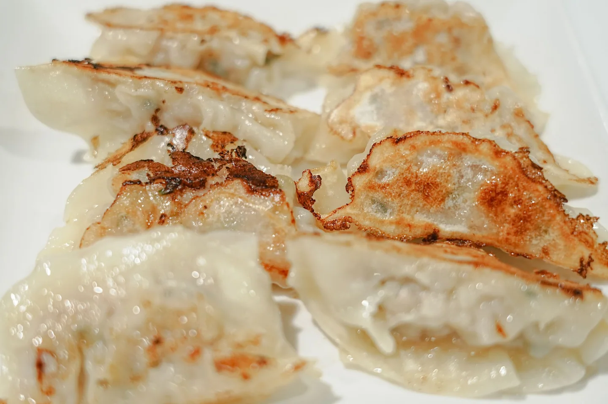
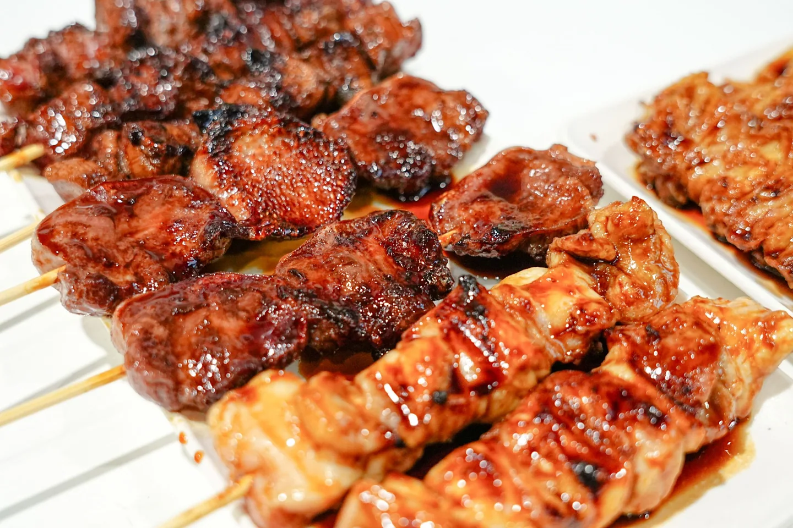
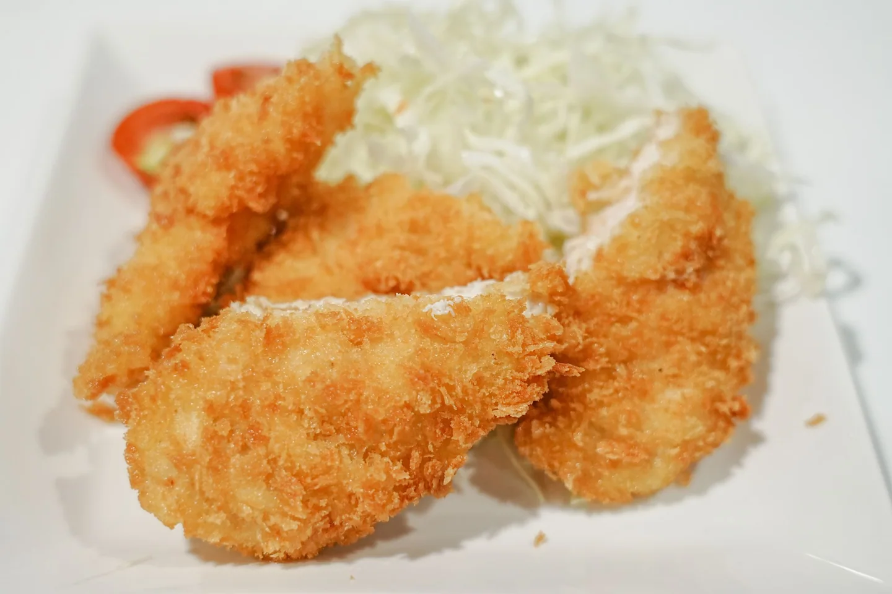
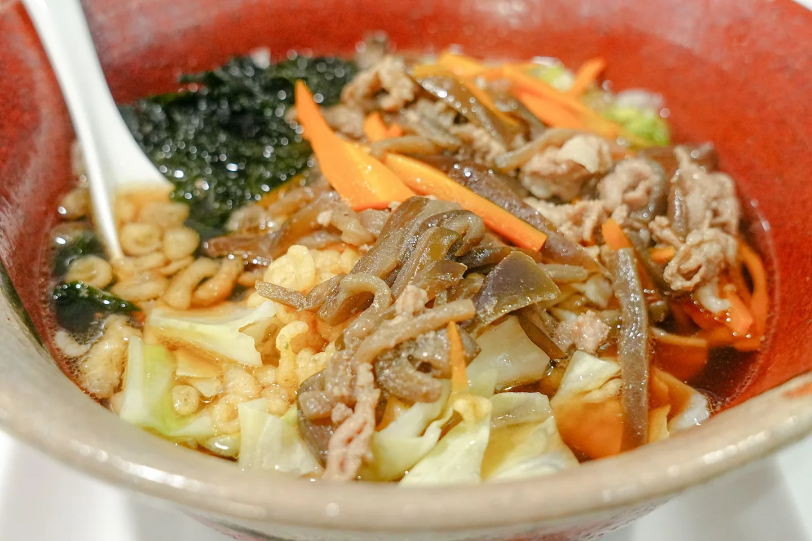

手作り餃子
きれいな焼き目に、思わず箸が伸びる。みんなで囲む食卓にも、お一人の晩ごはんにも。
ルーの手作り料理と、山梨のふるさとの味。
気になる一皿から、どうぞ。

継ぎ足し続けた秘伝のタレ。
香ばしく焼き上げる串焼きは、ルー自慢の味です。タレでも塩でも、お好みの一本をどうぞ。
150円〜（税込）
串の種類を見る↓何気ない夜を、ちょっとおいしく。
お酒にも、ごはんにも合う一皿を。

きれいな焼き目に、思わず箸が伸びる。みんなで囲む食卓にも、お一人の晩ごはんにも。

サクサクの衣を楽しむ、ルーの定番。お子さまとのお食事にも、乾杯のお供にも。

お肉と野菜をのせた、ほっとする一杯。山梨の味を、いつもの夜にもお楽しみいただけます。
800円（税込）
心も体も温まる、山梨の郷土料理。ご用意の状況は、お気軽にお店へお尋ねください。
野菜たっぷりのメニューや、低糖質のおつまみも。
その日の気分に合わせて、お料理とお酒をお楽しみください。
お席のご予約、ご家族でのお食事、宴会のご相談もお気軽に。